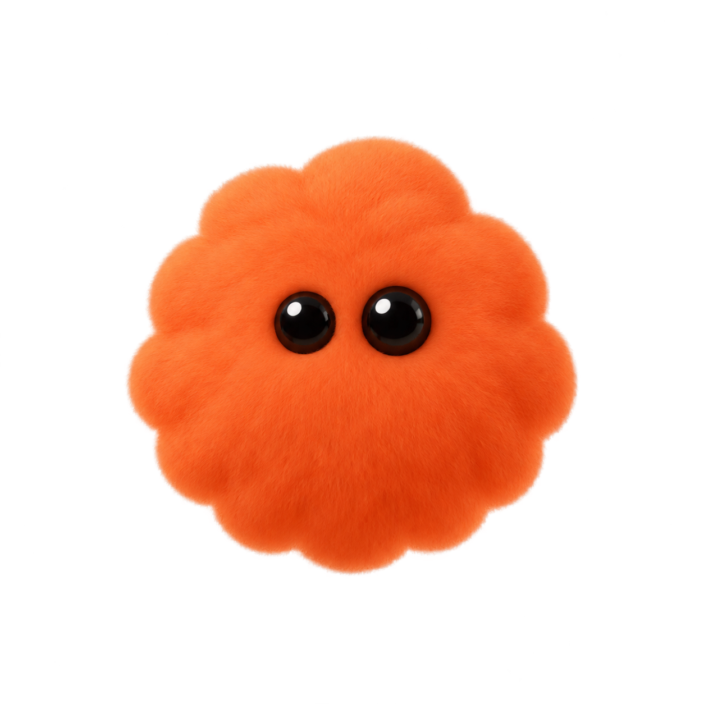

<!doctype html><html lang="ko"><meta charset="utf-8"><meta http-equiv="Content-Security-Policy" content="default-src 'self'; style-src 'self' 'unsafe-inline'; img-src 'self' data:"><title>OhMyDots</title><style>
*{box-sizing:border-box}body{margin:0;background:#171717;color:#eee;font:13px -apple-system,BlinkMacSystemFont,sans-serif}header{height:48px;display:flex;align-items:center;padding:0 14px 0 88px;border-bottom:1px solid #ffffff0b;-webkit-app-region:drag;background:#1b1b1b}.brand{display:flex;align-items:center;gap:9px;font-weight:600;letter-spacing:-.2px}.brand img{width:27px;height:27px;object-fit:contain}.tools{margin-left:auto;display:flex;gap:5px}button{-webkit-app-region:no-drag;border:0;border-radius:8px;color:#aaa;background:transparent;cursor:pointer;transition:background .15s,color .15s,transform .15s}button:hover{background:#ffffff0d;color:white}button:active{transform:scale(.94)}.tools button{width:30px;height:30px;font-size:20px}button:focus-visible{outline:2px solid #aaa;outline-offset:2px}main{height:calc(100vh - 48px);display:flex;align-items:center;justify-content:center;text-align:center}main p{color:#999;line-height:1.7}main button{background:#303030;padding:10px 18px;font-size:13px;color:white}.spinner{width:22px;height:22px;border:2px solid #444;border-top-color:#ccc;border-radius:50%;margin:0 auto 18px;animation:spin .8s linear infinite}@keyframes spin{to{transform:rotate(360deg)}}@media(prefers-reduced-motion:reduce){*{animation:none!important;transition:none!important}}[hidden]{display:none!important}
</style><header><div class="brand"><span>OhMyDots</span></div><div class="tools"><button data-action="reload" title="새로고침" aria-label="새로고침">↻</button><button data-action="browser" title="브라우저에서 열기" aria-label="브라우저에서 열기">↗</button><button data-action="menu" title="더 보기" aria-label="더 보기">⋯</button></div></header><main><div><div class="spinner"></div><h3 id="message">OhMyDots를 여는 중</h3><p id="detail">컴퓨터와 대화에 연결하고 있습니다.</p><button id="retry" data-action="reload" hidden>다시 연결</button></div></main><script src="shell.js"></script></html>
